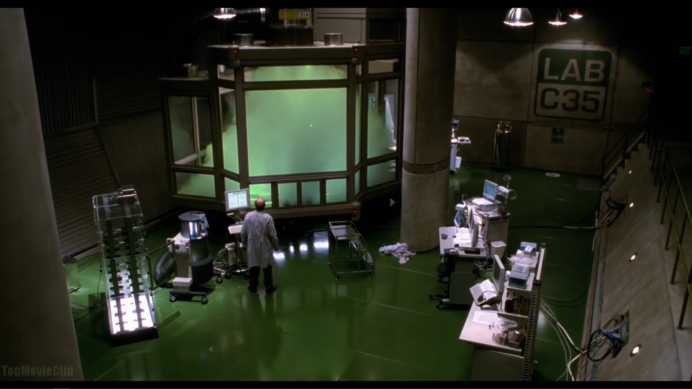
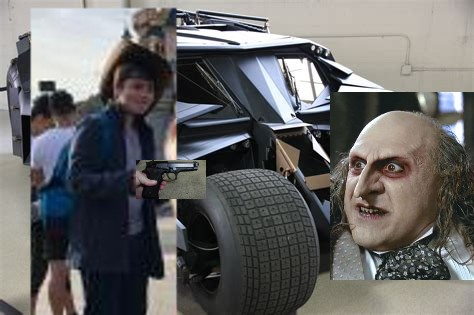

Bregvision™ Seasons 1 and 2 now streaming Here! follow Matthew, Travis, Zak and others as they cause wacky hyjinks in their local residence, those cheeky rascals!
Bregvision™ is a pop culture icon of the modern era, but how did this come to be? Bregvision™ was created in 1977 by Dr ▓▓▓▒▓░▓ Whilest undergoing a study to find "The perfect television show." The study gained massive media attention when the results were published later that year, leading to the popularity of the show still seen to this day. Sadly just before pilot was aired Dr. ░▒▓▓▓▒ mysteriously vanished and his assistant Dr. Young was promoted to lead writer and owner of the Bregvision™ franchise and its respected copywrites.
This image was captured during the experiment that created Bregvision™.
Join the bregvision™ cast in their biggest journey yet! In the lawless streets of Gotham, Leeds one man can stop the villans out for money, reputation and chaos. Is lucas a big enough man for the challenge... FIND OUT IN: Bregvision™: The Batman Special.
You have (1) month of free access to vimeo, Brazil's number (3) streaming service